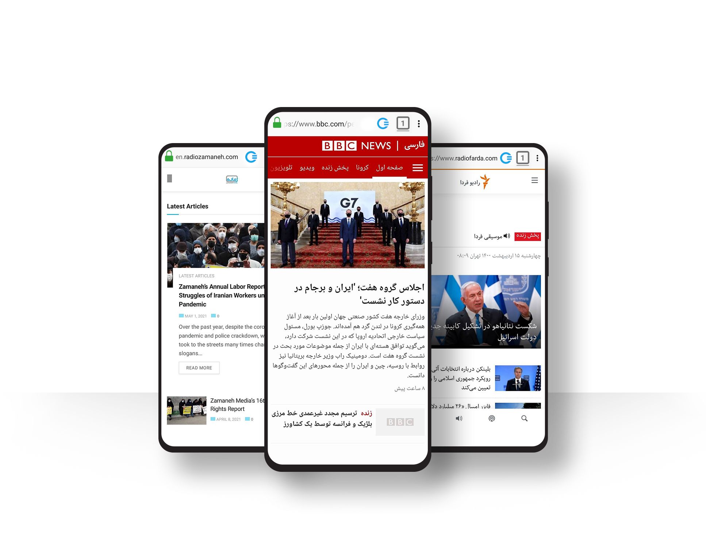
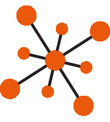

<title>CENO Browser | Share the Web</title>
  <section>
    <div class="container">
      <!--div class="card home border-0"-->
        <div class="row">
          <div class="col-lg-7 order-lg-2 order-sm-1" style="margin-top:-45px">
             <div class="card home bg-transparent border-0"  style="margin-top:-70px">
	       
             </div>
	   </div>
          <div class="col-lg-5 order-lg-1 order-sm-2" style="margin-top:70px">
            <div class="card home border-0" style="margin-top:70px">
    		<h1 class="card-title">Share the web!</h1>
		<p class="card-text">CENO (short for censorship.no!) is the world’s first mobile browser that side-steps current Internet censorship methods. Its peer-to-peer backbone allows people to access and share web information in and across regions where connectivity has been interrupted or compromised.</p>
	          <p><a name="download"></a><a href="https://play.google.com/store/apps/details?id=ie.equalit.ceno&amp;pcampaignid=pcampaignidMKT-Other-global-all-co-prtnr-py-PartBadge-Mar2515-1">
              
          </a>
            <a href="https://paskoocheh.com/tools/124/android.html?utm_source=UpdatePage">
                
            </a>
            <a href="https://github.com/censorship-no/ceno-browser/releases">
                
            </a></p>
          </div>
        </div><!--end card 2-->
      </div> <!-- row -->
    </div> <!-- end container -->
  </section> <!-- end section 1 -->

  <section>
    <div class="container py-3" style="align-content:center; justify-content;">
	<!--div class="card border-0"-->
      <div class="row">
          <div class="col-lg-4">
           <div class="card">
            <div class="card-body">
             <br>
              <h3 class="card-title">Unlock the Web</h3>
              <p class="card-text">Access web content through a network of cooperating peers - even when the internet is down or censored. Install CENO Browser today and be prepared for the next time you get 🔌 unplugged.</p>
            </div>
	   </div>
	  </div>
          <div class="col-lg-4">
           <div class="card">
            <div class="card-body">
            
              <h3 class="card-title">Grow the Network</h3>
              <p class="card-text">Fight censorship by becoming a bridge! Install and run CENO Browser to instantly join the network and expand the availability of blocked websites to those in censored countries.</p>
            </div>
           </div>
          </div> <!-- end card 2 -->
         <div class="col-lg-4">
           <div class="card">
            <div class="card-body">
            
              <h3 class="card-title">Free and Open Source</h3>
              <p class="card-text">CENO is based on <a href="https://www.mozilla.org/firefox/android/">Firefox for Android</a>, extended to make use of the <a href="https://github.com/equalitie/ouinet">Ouinet library</a> - enabling third party developers to incorporate the CENO network into their apps for P2P connectivity.</p>
            </div>
           </div>
         </div> <!-- end card 3 -->
       </div> <!-- end row --> 
    </div> <!-- end container -->
  </section> <!-- end section 2 -->
